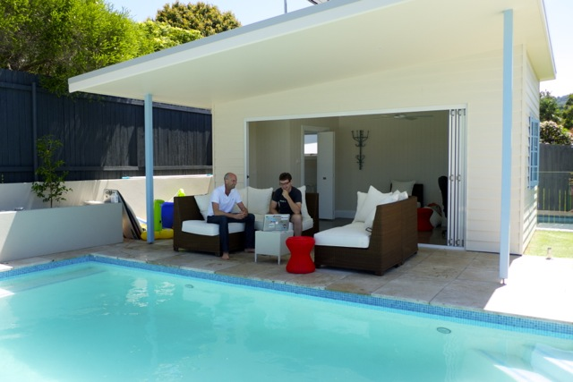

Reclaiming discipline in client side web development
James Roper
@jroper

Outline

Dependency management

Dependency management
libraryDependencies ++= Seq(
"org.webjars" % "bootstrap" % "3.1.0",
"org.webjars" % "knockout" % "3.0.0",
"org.webjars" % "leaflet" % "0.7.1"
)Dependency management
<script type="text/javascript"
src="@routes.WebJarAssets.at(
WebJarAssets.locate("js/bootstrap.min.js")
)"></script>Dependency management
<link rel="stylesheet" media="screen"
href="@routes.WebJarAssets.at(
WebJarAssets.locate("css/bootstrap.min.css")
)"/>
Dependency injection

Dependency injection
define(function() {
return {
name: "duck",
speak: function() {
console.log("quack quack");
}
};
});Dependency injection
require(["duck"], function(duck) {
console.log("What does a " + duck.name + " do?");
duck.speak();
});Dependency injection
define(["duck", "pig"], function(duck, pig) {
return {
names: [duck.name, pig.name],
commotion: function() {
duck.speak();
pig.speak();
}
};
});Dependency injection
require.config({
paths: {
farm: "./farm",
duck: "./animals/duck",
pig: "./animals/pig"
}
});
require(["farm"], function(farm) {
farm.commotion();
});Dependency injection
<script type="text/javascript"
src="@routes.WebJarAssets.at(
WebJarAssets.locate("require.js")
)"
data-main="@routes.Assets.at("main.js")"></script>Dependency injection
require.config({
paths: {
map: "./models/map"
},
map: {
"*": {
leaflet: "webjars!leaflet.js"
}
}
});
require(["map"], function(map) {
map.init();
});Dependency injection
<script type="text/javascript"
src="@routes.WebJarAssets.requirejs"
data-main="@routes.Assets.at("main.js")"></script>
Separation of concerns
Makes code easier to comprehend and test
What to separate
AJAX - with promises
What to separate
DOM manipulation, using templates, a framework or with manual encapsulation
What to separate
Browser APIs, such as history, storage, WebSockets, EventSource
What to separate
... plus anything else that would otherwise be mixing concerns
Testing
mocha
simple, flexible, fun
Mocha testing
var assert = require("assert");
describe("Adder", function() {
describe("#addFour", function() {
it("should add 4", function() {
assert.equal(5, addFour(1));
});
});
});Mocha testing
var assert = require("assert");
var requirejs = require("requirejs");
describe("Adder", function() {
var adder = requirejs("./adder");
describe("#addFour", function() {
it("should add 4", function() {
assert.equal(5, adder.addFour(1));
});
});
});Mocha testing
But what about mocking?
Mocking
var assert = require("assert");
var requirejs = require("requirejs");
var Squire = requirejs("./squire");
describe("Adder", function() {
describe("#addFour", function() {
it("should add 4", function() {
var injector = new Squire();
injector.require(["./adder"], function(adder) {
assert.equal(5, adder.addFour(1));
});
});
});
});Mocking
describe("Adder", function() {
describe("#addFour", function() {
it("should add 4", function(done) {
var injector = new Squire();
injector.require(["./adder"], function(adder) {
assert.equal(5, adder.addFour(1));
done();
});
});
});
});Mocking
var MockAnimal = function(name) {
this.name = name;
this.spoken = 0;
self = this;
this.speak = function() {
self.spoken += 1;
}
};Mocking
it("should return all names", function(done) {
var injector = new Squire();
injector.mock("duck", new MockAnimal("Mock duck"));
injector.mock("pig", new MockAnimal("Mock pig"));
injector.require(["./farm"], function(farm) {
assert.deepEqual(["Mock duck", "Mock pig"],
farm.names);
done();
});
});Mocking
it("should cause a commotion", function(done) {
var injector = new Squire();
var duck = new MockAnimal("Mock duck");
var pig = new MockAnimal("Mock pig");
injector.mock("duck", duck);
injector.mock("pig", pig);
injector.require(["./farm"], function(farm) {
farm.commotion();
assert.equal(1, duck.spoken);
assert.equal(1, pig.spoken);
done();
});
});Danger!
The "but these are only tests" anti-pattern
DRY
function withFarm(test) {
return function(done) {
var injector = new Squire();
var duck = new MockAnimal("Mock duck");
var pig = new MockAnimal("Mock pig");
injector.mock("duck", duck);
injector.mock("pig", pig);
injector.require(["./farm"], function(farm) {
test(farm, duck, pig);
done();
});
};
});DRY
it("should return all names", withFarm(farm) {
assert.deepEqual(["Mock duck", "Mock pig"],
farm.names);
});
it("should cause a commotion",
withFarm(farm, duck, pig) {
farm.commotion();
assert.equal(1, duck.spoken);
assert.equal(1, pig.spoken);
});